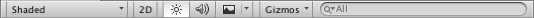

The Scene viewAn interactive view into the world you are creating. You use the Scene View to select and position scenery, characters, cameras, lights, and all other types of Game Object. More info See in Glossary control bar lets you choose various options for viewing the SceneA Scene contains the environments and menus of your game. Think of each unique Scene file as a unique level. In each Scene, you place your environments, obstacles, and decorations, essentially designing and building your game in pieces. More info See in Glossary and also control whether lighting and audio are enabled. These controls only affect the Scene view during development and have no effect on the built game.

Draw mode menu
The first drop-down menu selects which Draw Mode will be used to depict the Scene. The available options are:
Shading mode
Shaded: show surfaces with their textures visible.
Wireframe: draw meshes with a wireframe representation.
Shaded Wireframe: show meshes textured and with wireframes overlaid.
Render Paths: show the rendering pathThe technique Unity uses to render graphics. Choosing a different path affects the performance of your game, and how lighting and shading are calculated. Some paths are more suited to different platforms and hardware than others. More info See in Glossary for each object using a color code: Blue indicates deferred shadingA rendering path that places no limit on the number of lights that can affect a GameObject. All lights are evaluated per-pixel, which means that they all interact correctly with normal maps and so on. Additionally, all lights can have cookies and shadows. More info See in Glossary, Green indicates deferred lighting, yellow indicates forward renderingA rendering path that renders each object in one or more passes, depending on lights that affect the object. Lights themselves are also treated differently by Forward Rendering, depending on their settings and intensity. More info See in Glossary and red indicates vertex lit.
Alpha Channel: render colors with alpha.
Overdraw: render objects as transparent “silhouettes”. The transparent colors accumulate, making it easy to spot places where one object is drawn over another.
Mipmaps: show ideal texture sizes using a color code: red indicates that the texture is larger than necessary (at the current distance and resolution); blue indicates that the texture could be larger. Naturally, ideal texture sizes depend on the resolution at which the game will run and how close the cameraA component which creates an image of a particular viewpoint in your scene. The output is either drawn to the screen or captured as a texture. More info See in Glossary can get to particular surfaces.
Deferred
These modes let you view each of the elements of the G-buffer (Albedo, Specular, Smoothness and NormalThe direction perpendicular to the surface of a mesh, represented by a Vector. Unity uses normals to determine object orientation and apply shading. More info See in Glossary) in isolation. See documentation on Deferred Shading for more information.
Global Illumination
The following modes are available to help visualise aspects of the Global Illumination system: UV Charts, Systems, Albedo, Emissive, Irradiance, Directionality, Baked, Clustering and Lit Clustering. See documentation on GI Visualisations for informaiton about each of these modes.
Material Validator
There are two Material Validator modes: Albedo and Metal Specular. These allow you to check whether your physically-based materials use values within the recommended ranges. See Physically Based Material Validator for more information.
2D, lighting and Audio switches
To the right of the Render Mode menu are three buttons that switch certain Scene view options on or off:
2D: switches between 2D and 3D view for the Scene. In 2D mode the camera is oriented looking towards positive z, with the x axis pointing right and the y axis pointing up.
Lighting: turns Scene view lighting (lights, object shading, etc) on or off.
Audio: turns Scene view audio effectsAny effect that can modify the output of Audio Mixer components, such as filtering frequency ranges of a sound or applying reverb. More info See in Glossary on or off.
Effects button and menu
The menu (activated by the small mountain icon to the right of the Audio button) has options to enable or disable renderingThe process of drawing graphics to the screen (or to a render texture). By default, the main camera in Unity renders its view to the screen. More info See in Glossary effects in the Scene view.
SkyboxA special type of Material used to represent skies. Usually six-sided. More info See in Glossary: a skybox texture rendered in the Scene’s background
FogA post-processing effect that overlays a color onto objects depending on the distance from the camera. Use this to simulate fog or mist in outdoor environments, or to hide clipping of objects near the camera’s far clip plane. More info See in Glossary: gradual fading of the view to a flat color with distance from the camera.
FlaresThe source asset used by Lens Flare Components. The Flare itself is a combination of a texture file and specific information that determines how the Flare behaves. More info See in Glossary: lens flaresA component that simulates the effect of lights refracting inside a camera lens. Use a Lens Flare to represent very bright lights or add atmosphere to your scene. More info See in Glossary on lights.
Animated Materials: Defines whether or not animated materials show the animation
The Effects button itself acts as a switch that enables or disables all the effects at once.
Gizmos menu
The Gizmos menu contains lots of options for how objects, icons, and gizmosA graphic overlay associated with a GameObject in a Scene, and displayed in the Scene View. Built-in scene tools such as the move tool are Gizmos, and you can create custom Gizmos using textures or scripting. Some Gizmos are only drawn when the GameObject is selected, while other Gizmos are drawn by the Editor regardless of which GameObjects are selected. More info See in Glossary are displayed. This menu is available in both the Scene view and the Game view. See documentation on the Gizmos Menu manual page for more information.
Search box
The rightmost item on the control bar is a search box that lets you filter items in the Scene view by their names and/or types (you can select which with the small menu at the left of the search box). The set of items that match the search filter are also be shown in the Hierarchy view which, by default, is located to the left of the Scene view.
Did you find this page useful? Please give it a rating:
Is something described here not working as you expect it to? It might be a Known Issue. Please check with the Issue Tracker at issuetracker.unity3d.com.
Thanks for letting us know! This page has been marked for review based on your feedback.
If you have time, you can provide more information to help us fix the problem faster.
You've told us this page needs code samples. If you'd like to help us further, you could provide a code sample, or tell us about what kind of code sample you'd like to see:
You've told us there are code samples on this page which don't work. If you know how to fix it, or have something better we could use instead, please let us know:
You've told us there is information missing from this page. Please tell us more about what's missing:
You've told us there is incorrect information on this page. If you know what we should change to make it correct, please tell us:
You've told us this page has unclear or confusing information. Please tell us more about what you found unclear or confusing, or let us know how we could make it clearer:
You've told us there is a spelling or grammar error on this page. Please tell us what's wrong:
You've told us this page has a problem. Please tell us more about what's wrong:
Thanks for helping to make the Unity documentation better!